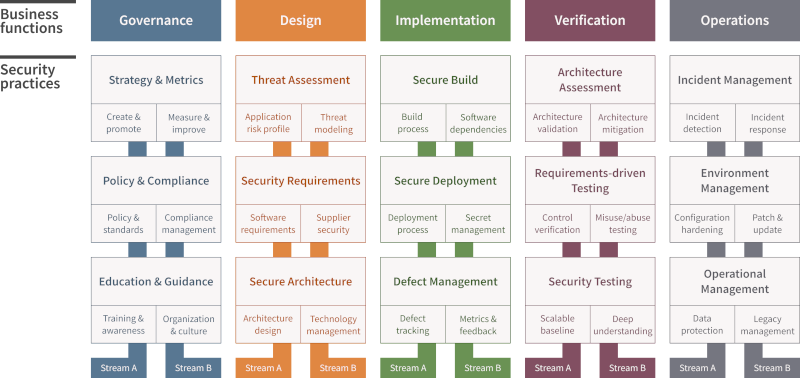

Glossaries
TACACS+ uses Transmission Control Protocol (TCP) as Transport Layer Protocol.
RADIUS uses UDP port 1812 or 1645 for authentication and port 1813 or 1646 for accounting. TACACS uses TCP port 49 to communicate between the client and server.
ARP Poisoning (also known as ARP Spoofing) is a type of cyber attack carried out over a Local Area Network (LAN) that involves sending malicious ARP packets to a default gateway on a LAN in order to change the pairings in its IP to MAC address table. ARP Protocol translates IP addresses into MAC addresses.
pivot: The act of an attacker moving from one compromised system to one or more other systems within the same or other organizations. Pivoting is fundamental to the success of advanced persistent threat (APT) attacks. SSH trust relationships may more readily allow an attacker to pivot.
An ISFW (Internal Segmentation Firewall) enforces access control and firewall rules within the data center and also extends its protective reach across routers, VLANs, and subnets. By integrating ISFWs, businesses can enhance cybersecurity, reduce the attack surface, and align with a zero trust model.
The Risk Management Framework (RMF) establishes mandatory requirements for federal agencies.
The Cybersecurity Framework (CSF) is designed for critical infrastructure and commercial organizations.
ISO 27001 establishes the guidelines for implementing an information security management system (ISMS) but is nation and industry agnostic.
Center for Internet Security (CIS) provides OS, application, and hardware security configuration guides for a wide range of products.
Digital rights management (DRM) methods attempt to provide copyright protection for copyrighted works.
Data loss prevention (DLP) systems detect and prevent data from leaving a network.
A cloud access security broker (CASB) is software placed logically between users and cloud-based resources to enforce security policies used in an internal network.
A rainbow table attack is a password cracking method that uses a special table (a rainbow table) to crack the password hashes in a database. Rainbow table attacks are less effective against modern password hashing practices. Two of the main ways to defend against it are MFA and Strong Passwords. Even with salting, strong passwords are essential. Enforce complex passwords with a mix of uppercase and lowercase letters, numbers, and symbols.
A managed security service provider (MSSP) offers network security services to an organization. As a third party, an MSSP can alleviate the strain on IT teams, as well as free up crucial time the organization needs to support and expand operations.
S-RPC (secure remote procedure call) is an authentication service and is simply a means to prevent unauthorized execution of code on remote systems.
Software-defined network (SDN) is a unique approach to network operation, design, and management. SDN aims at separating the infrastructure layer (i.e., hardware and hardware-based settings) from the control layer (i.e., network services of data transmission management). Furthermore, this also removes the traditional networking concepts of IP addressing, subnets, routing, and so on from needing to be programmed into or be deciphered by hosted applications.
East-west traffic is the traffic flow that occurs within a specific network, data center, or cloud environment.
North-south traffic is the traffic flow that occurs inbound or outbound between internal systems and external systems.
IEEE 802.1X provides port-based access control and is useful both on wired and wireless connections to block access to systems and users that are unknown or that fail authentication.
NAT offers many benefits. NAT hides the internal IP addressing scheme and enables the sharing of a few public internet addresses with a large number of internal clients. NAT supports the use of the private IP addresses from RFC 1918 on an internal network. NAT does not protect against or prevent brute-force attacks.
SOC (System and Organization Controls) 1engagements assess the organizations controls that might impact the accuracy of financial reporting. SOC 2 and 3 engagements extend into controls protecting confidentiality, integrity, and availability more generally. SOC 3 engagements assess the organizations controls that affect the security and privacy of information stored in a system. The results of a SOC 3 audit are intended for public disclosure.
The Control Objectives for Information Technology (COBIT) are a framework for evaluating the controls organizations implement around information systems. The COBIT is a documented set of best IT security practices crafted by ISACA and the IT Governance Institute (ITGI)
ATT&CK and the Cyber Kill Chain are tools used to conduct threat intelligence.
Accountability is maintained by monitoring the activities of subjects and objects as well as monitoring core system functions that maintain the operating environment and the security mechanisms. Authentication is required for effective monitoring, but it doesnt provide accountability by itself. Account lockout prevents login to an account if the wrong password is entered too many times. User entitlement reviews can identify excessive privileges.
Security Orchestration, Automation, and Response (SOAR) technologies provide automated responses to common attacks, reducing an administrators workload.
OpenVAS (Open Vulnerability Assessment Scanner) is a network vulnerability scanning tool that searches systems for known vulnerabilities while minimizing damage caused during the assessment.
The tool nmap is used to detect live systems and the status of ports; it is not considered a vulnerability scanner.
Metasploit Framework is an exploitation framework that can cause damage to assessed systems.
The Linux command lsof is used to list open files.
IPsec is a security protocol that automatically performs reauthentication of the client system throughout the connected session in order to detect session hijacking. TLS, SSH, and LEAP do not include periodic midstream reauthentication.
Civil investigations typically follow the preponderance of the evidence standard.
The Network Time Protocol (NTP) may be used to synchronize the clocks of all devices in an organization with a centralized source, improving the ability to correlate log entries from different sources.
The scoping process removes controls from a list of controls from a suggested baseline.
A playbook is a document or checklist that defines steps taken to validate an incident and steps taken in response to an incident.
A runbook implements the checklists from a playbook.
Service accounts are regular accounts that are used to run applications and services. They are not used to install or service applications, and administrators do not share them.
A VLAN (virtual LAN) is a hardware-imposed network segmentation created by switches that requires a routing function to support communication between different segments.
The COBIT key principles are: Provide Stakeholder Value, Holistic Approach, Dynamic Governance System, Governance Distinct From Management, Tailored to Enterprise Needs, and End-to-End Governance System.
STRIDE stands for Spoofing, Tampering, Repudiation, Information disclosure, Denial of service and Elevation of privilege, developed by Loren Kohnfelder and Praerit Garg in 1999 to identify potential vulnerabilities and threats to company products.
Software Assurance Maturity Model (SAMM) : 
There are six standard data type classifications used in either a government/military or a private sector organization in this list of options: public, private, sensitive, proprietary, critical, and confidential.
Business Continuity Plan (BIA): 1. Identification of priorities;
-
Risk identification;
-
Likelihood assessment;
-
Resource prioritization.
Port security in IT field can refer to several concepts, including network access control (NAC), Transport layer ports, and RJ-45 jack ports. NAC requires authentication before devices can communicate on the network. Transport-layer port security involves using firewalls to grant or deny communications to TCP and UDP ports. RJ-45 jacks should be managed so that unused ports are disabled and that when a cable is disconnected, the port is disabled. This approach prevents the connection of unauthorized devices. Shipping container storage relates to shipping ports, which is a type of port that is not specifically related to IT or typically managed by a CISO.
The Digital Signature Standard allows federal government use of the Digital Signature Algorithm, RSA, or the Elliptic Curve DSA in conjunction with the SHA-1 hashing function to produce secure digital signatures.
SPAN ports (Switched Port Analyzer) and network taps are the most reliable mechanisms for gathering network traffic.
Real evidence must be either uniquely identified by a witness or authenticated through a documented chain of custody.